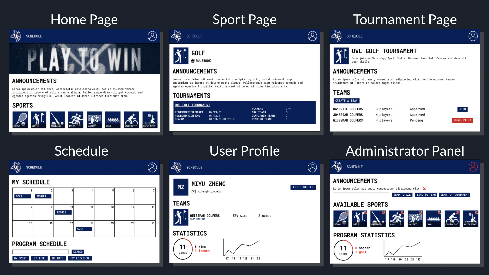

Rice IM Sports Website Redesign
January 2021 - May 2021
Client: Chris Watkins (Assistant Director for Intramural Sports at Rice University)
Team Name: Rice Ad Destroyers
Members: Miyu Zheng, Chase Hartsell, Charlie Liu, Jacob Lee and Jackson Hughes
Need for a Redesign
We plan to redesign Rice University's IM Sports Website to counter the main issues that the client expressed of slow server connectivity, an overwhelming amount of ads and lack of administrator ease of use. The new website would also contain cleaner layouts, filtered advertisements from a select of organizations at Rice University and smoother rendering speeds.
We aim to build a more intuitive, higher speed, and visually appealing website that is free from unwanted ads for Rice University to run its intramural sports program.
Our design Criteria includes:
• Protects users' personal information from access by non-administrators
• Allows for legally valid online signatures on registration waiver
• Displays one or less Rice-sponsored ads per page
Brainstormed Ideas
Our team brainstormed layouts and components individually and built off each other’s. We focused on creating different intuitive and effective layouts with additional components like a messaging system to help users be more engaged and active on the website. Overall, we used flow charts and storyboarding to find a way to make the new website more navigable, intuitive and user-friendly than it is currently.
Design Selection
Our team began our design selection process by brainstorming and sketching layouts focused around the home page. Realizing we had to be more specific and reasonable about essential components, our team decided to focus on user flowchart, aesthetic language and data display. We used pugh scoring and screening matrices to filter out ideas and choose our top ideas. Then our team combined our top ideas for each category, highly connected for flowchart, materialistic modern for aesthetic language and pie charts for data display.
Conceptual Idea Sketches
After our brainstorming, scoring and screening processes, our team chose a highly connected materialistic modern design to move forward with in our final solution. We used the materialistic modern aesthetic to make coherent, clear and simple icons, images and dark blue color scheme. The highly connected flowchart was used to connect all the pages to each other in one or two clicks at the most and the data display component is portrayed with the pie chart and line graph displaying the program and play statistics.

Prototype Phase One
For our first low fidelity demonstrative prototype, our team decided to build an interactive and connected storyboard of our webpages that users could navigate through. Using a software called Figma, we made use of its prototyping option to link all the webpages together through the appropriate links and icons after clicking on it.
Prototype Phase Two
Advancing towards our medium fidelity prototype, our team sought to use HTML to code the general idea of our main webpages' user interface: the homepage, sports page, tournament page, team page and sign in page and link them as intended in our initial prototype. We focused on translating the storyboard into a website and modified design based on feedback from the client and users of the first prototype. We used a software called Bootstrap as a base to work on the front end development of our website.
Prototype Phase Three
For our final prototype, our team sought to build upon our medium fidelity prototype, adding more functions and connected webpages. We implemented a sport, user and team creation page, legal waiver page, administrator panel panel and schedule page.
Future Prototyping Plans
We learned that these prototypes take deliberate planning and understanding of the tools and softwares, requiring us to prepare and practice using the code or language beforehand. In the future we plan to implement more back-end development into the current prototypes, for data management and storage using databases, We also aim to add administrative management and editing abilities and potentially include in-website messaging between users, calendar-style schedule and further user support.
Testing
Our team devised a set of four different tests, with each test corresponding to one of the four following criteria to determine whether the new website met our design criteria: ease of use and aesthetics of the website, whether the site showed ads, how quickly the website loaded, and whether the website tracked the required performance and participation statistics. These tests allowed us to demonstrate the current progress of our new website, as well as see where our work still needs to be improved.
To measure the ease of use and aesthetics of the website, we sent out a survey to users that contained a user-defined scale for both of these design criteria in Tables 1.1 and 1.2, as well as open-ended questions that prompted users about any difficulties they had with the prototype. From the results of this survey, we were able to determine that 82.4% had little to no difficulty using the website, and there were very few complaints about the design of the website.